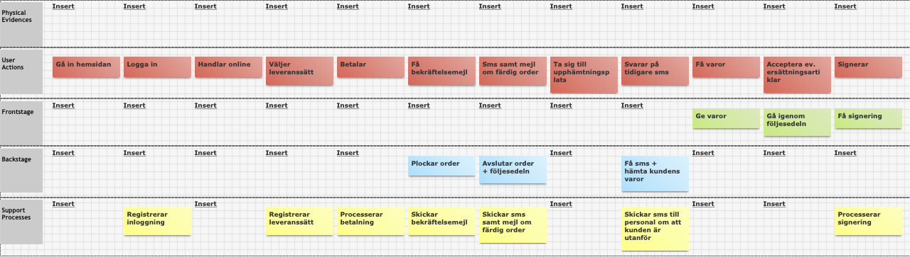

Service design
Concept development

The main mission in this course was to improve an existing service
with help of service design tools and methods.
During the course we use customer journey map, service blueprint, SWOT analysis and bussiness model canvas.
Project participants: Catrin Mattsson, Frida Palmqvist, Lisa Hedbys, Maria Sjöström, Ruben Nordell